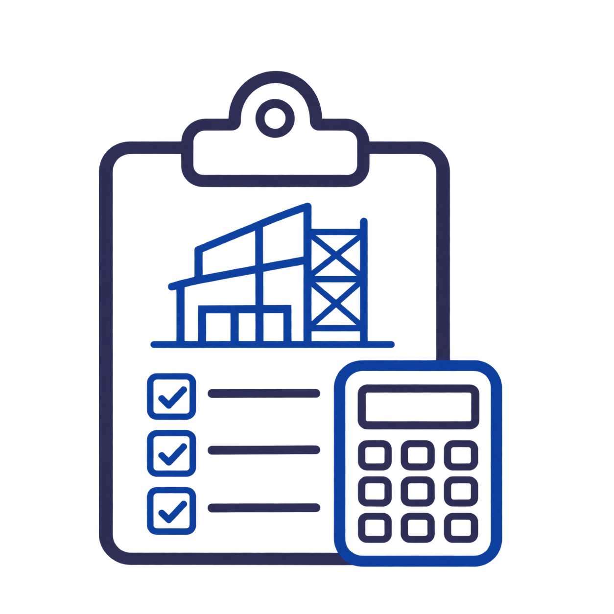
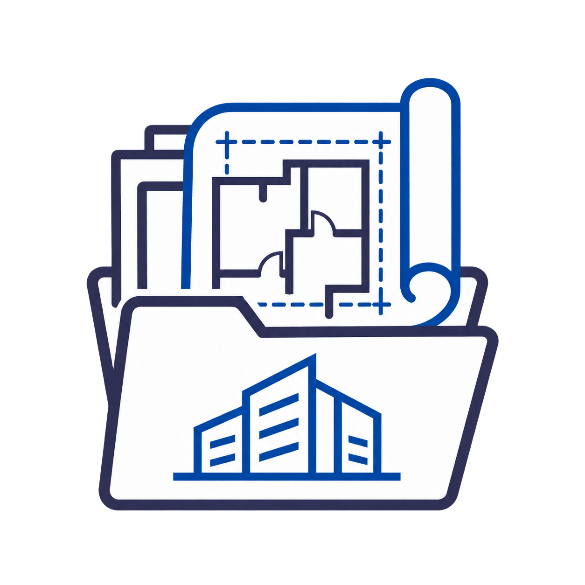
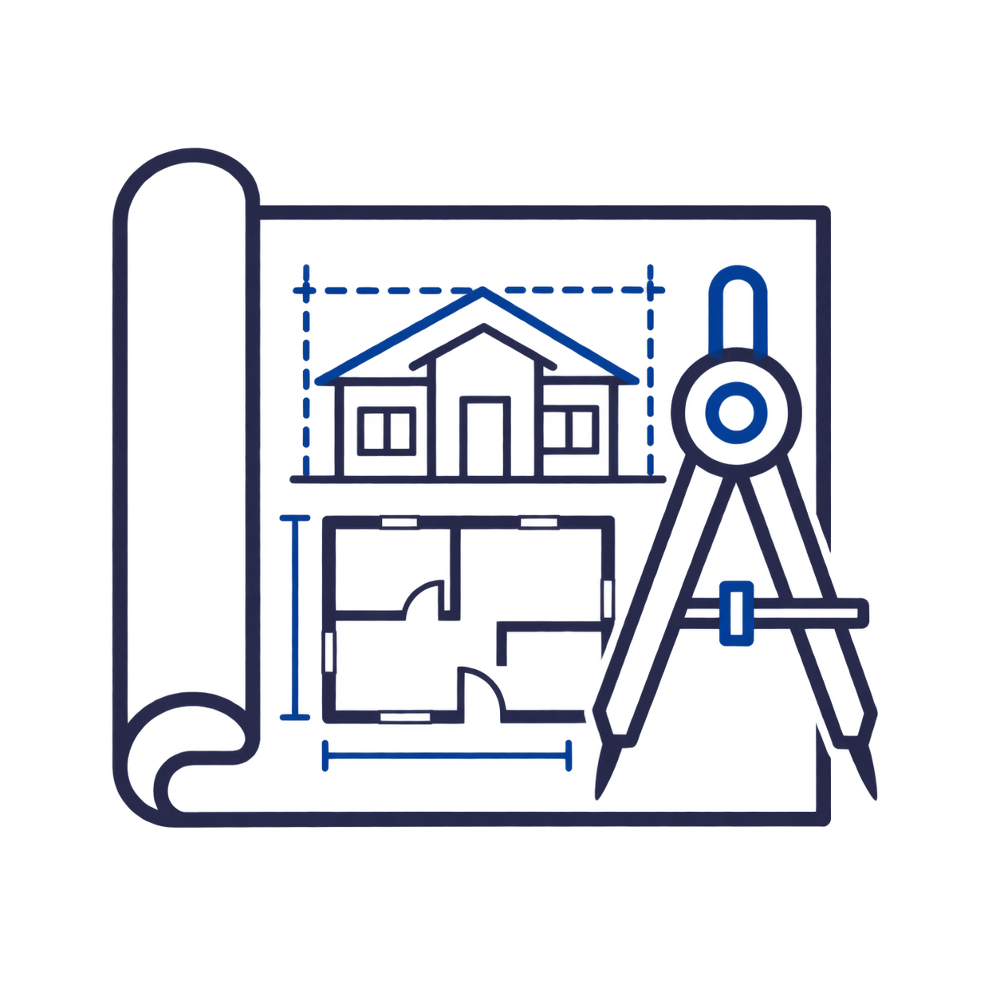
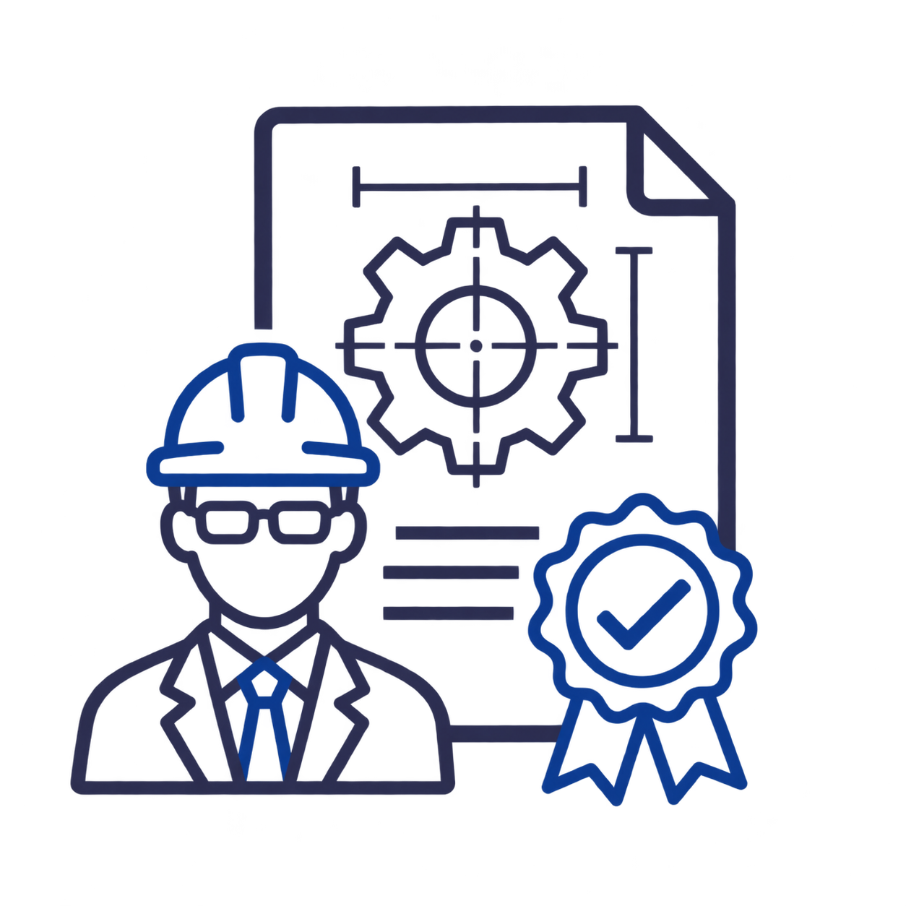

Стадия П
Проектная документация
Основные технологические решения: организация процессов, планировки и размещение оборудования.
Примеры PDF-альбомов готовятся к публикации.
Каждое здание должно быть удобным, функциональным и безопасным.
Отдел промышленной технологии разработает:
Отдел гражданской технологии разработает:
Подробнее ознакомиться с перечнем предоставляемых услуг по разработке технологических решений вы можете по ссылкам ниже.
Получить консультацию вы можете, связавшись с нами, удобным для вас способом.
Учебные зоны, рабочие места и вспомогательные помещения школ, детских садов и учебных центров.
Организация рабочих мест, приёма посетителей и связей между помещениями.
Расположение основных и технических зон, оборудования и мест для его обслуживания.
Кухня, торговые и вспомогательные помещения: приёмка, хранение, подготовка и выдача продукции.
Размещение автомобилей, организация проездов, въезда и выезда с объекта.
Связь уровней здания, перемещение людей и грузов, размещение оборудования.
Последовательность операций, рабочие зоны, оборудование и движение материалов.
Технологические решения на стадиях проектной и рабочей документации.
Проектная документация
Основные технологические решения: организация процессов, планировки и размещение оборудования.
Примеры PDF-альбомов готовятся к публикации.
Рабочая документация
Детальная проработка решений: планы, схемы, привязки оборудования и спецификации.
Примеры PDF-альбомов готовятся к публикации.

Оценка работ
Заключение договора

Получение исходных данных

Разработка проектной документации

Защита в экспертизе
Будущее здание начинается с ответа на простой вопрос: как в нём будут работать люди? Технологические решения связывают назначение помещений с повседневными процессами, оборудованием и обслуживанием. Они помогают рассмотреть объект со стороны пользователя ещё до того, как отдельные решения получат подробную архитектурную и инженерную проработку.
В «Абрикос» обсуждаем задачу вместе с заказчиком, генеральным проектировщиком или архитектурным бюро. Отправной точкой служат планы и описание будущей работы объекта. На этой основе определяем, какие материалы нужны команде, насколько подробно следует показать оборудование и какие вопросы предстоит согласовать между участниками проекта.
Для учебного здания важны организация занятий, рабочие места и связь основных помещений со вспомогательными. Для офиса — распределение сотрудников, приём посетителей и зоны совместного пользования. На предприятии питания планировка связана с приёмкой, хранением, приготовлением и выдачей продукции. Общий подход сохраняется, но содержание работы определяется конкретным назначением объекта.
Та же связь процессов и пространства рассматривается для торговли, бассейнов, автостоянок, производственных помещений и вертикального транспорта. Задание может охватывать целое здание или отдельную функциональную часть. Поэтому перед началом разработки важно обозначить границы: какие помещения входят в работу, какие процессы уже определены и какие решения заказчик ещё выбирает.
Исходные материалы показывают текущее состояние проекта и помогают определить ближайший шаг. Полнота комплекта бывает разной: иногда есть согласованная планировка и выбранное оборудование, иногда — только помещение и идея его использования. В обоих случаях полезно собрать имеющуюся информацию и отдельно отметить вопросы, на которые пока нет ответа.
Работа строится вокруг последовательного уточнения решений. Сначала необходимо договориться о результате, затем проверить, позволяет ли исходная планировка организовать нужные процессы. После этого можно предметно обсуждать размещение оборудования, связи помещений и сведения для смежных разделов. Такой порядок помогает заказчику видеть, какие вопросы уже решены, а какие остаются открытыми.
Промежуточные обсуждения нужны для выбора решений в пределах согласованной задачи. Замечания удобнее рассматривать вместе с их влиянием на другие части проекта: перенос оборудования может изменить не только план, но и исходные требования к подключениям. Существенные изменения задачи требуют отдельного уточнения состава дальнейшей работы.
Площадь объекта сама по себе не описывает весь объём разработки. Значение имеют количество функциональных зон, разнообразие оборудования, сложность рабочих процессов и требуемая детализация. Небольшое помещение с несколькими взаимосвязанными операциями может потребовать подробного обсуждения, тогда как для более просторной зоны часть решений уже бывает определена исходным заданием.
На организацию работы также влияют готовность планов, наличие характеристик оборудования и количество участников согласования. Если архитектурная основа меняется в ходе проектирования, принятые решения приходится пересматривать. Объём, условия и последовательность разработки обсуждаем после знакомства с материалами, чтобы предложение опиралось на задачу объекта и состояние проекта на момент обращения.
Технологическая планировка существует в общей структуре проекта. Размеры помещений, расположение входов и проходов связаны с рабочими сценариями, а оборудование предъявляет требования к инженерному обеспечению. Поэтому при разработке важно пользоваться актуальной архитектурной основой и передавать смежным специалистам согласованные сведения о размещении и характеристиках оборудования.
Обмен данными идёт в обе стороны: уточнения архитекторов и инженеров могут повлиять на расстановку и организацию зон. Для команды полезно понимать, какая версия плана принята за основу и какие вопросы требуют совместного решения. Это особенно актуально, когда оборудование выбирают параллельно с разработкой других разделов и его параметры ещё уточняются.
Текстовые материалы объясняют логику решений и дополняют планы. В них описывают назначение объекта, состав помещений, основные процессы и связь оборудования с организацией работы. Пояснения дают участникам проекта общий контекст: по каким исходным данным выполнена разработка, какие требования учтены и к каким решениям относятся представленные графические материалы.
Графическая часть позволяет сопоставить организацию работы с пространством. На технологических планировках показывают функциональные зоны, рабочие места, оборудование и необходимые связи между ними. Схемы потоков поясняют перемещение людей, материалов или продукции. Перечень оборудования связывает обозначения на планах с конкретными позициями. Набор листов и глубину детализации определяют по заданию, чтобы материалы отвечали дальнейшим задачам проектной команды.
При передаче документации важно обозначить состав комплекта, принятые исходные данные и порядок рассмотрения замечаний. Заказчику и смежным специалистам должно быть понятно, какие материалы относятся к согласованной версии и какие сведения требуют последующего уточнения. Если меняются назначение помещений, оборудование или рабочие процессы, влияние изменений рассматривают для связанных планов, перечней и заданий.
Для первой консультации пришлите план помещения и коротко опишите, что должно в нём происходить. Укажите стадию проекта, имеющиеся решения и вопросы, которые хотите обсудить. Этих материалов достаточно, чтобы начать разговор о задаче, уточнить исходные данные и определить состав дальнейшей разработки.